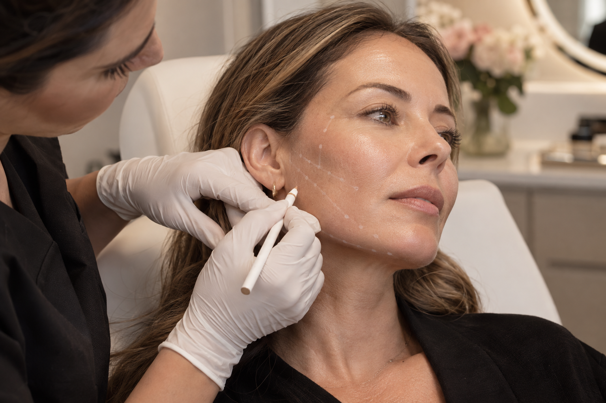

Firmeza
Estímulo de colágeno para auxiliar na melhora da flacidez.
Estímulo de colágeno
Tratamentos que estimulam a produção natural de colágeno, promovendo melhora progressiva da firmeza, sustentação e qualidade da pele.

Imagem demonstrativa — substituir pela foto oficial da profissionalO tratamento
Os bioestimuladores são substâncias aplicadas em pontos estratégicos para estimular o organismo a produzir novo colágeno.
Diferentemente de tratamentos voltados apenas ao volume, o foco está na melhora progressiva da qualidade da pele. A indicação, o produto e as regiões tratadas dependem de avaliação individual.
Possibilidades
Estímulo de colágeno para auxiliar na melhora da flacidez.
Tratamento planejado para regiões que perderam suporte com o tempo.
Melhora gradual do aspecto e da qualidade geral da pele.
Como funciona
Análise da flacidez, estrutura e necessidades de cada região.
Definição do produto e do planejamento mais adequados.
Tratamento realizado em pontos definidos durante o planejamento.
O colágeno é produzido gradualmente nas semanas e meses seguintes.
Cuidado progressivo
Descubra qual protocolo pode ser mais adequado para sua pele.
Conversar pelo WhatsApp ↗O tempo de resposta e os resultados variam conforme produto, protocolo e características individuais.